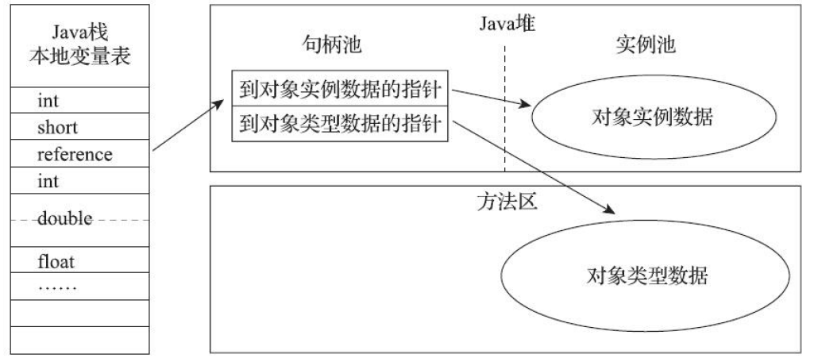
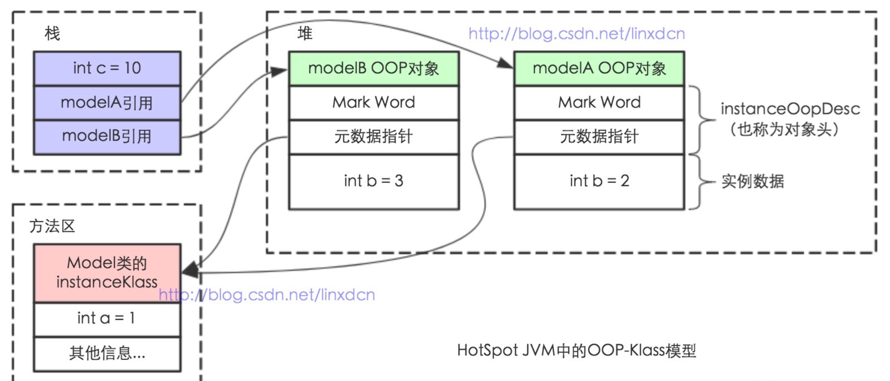
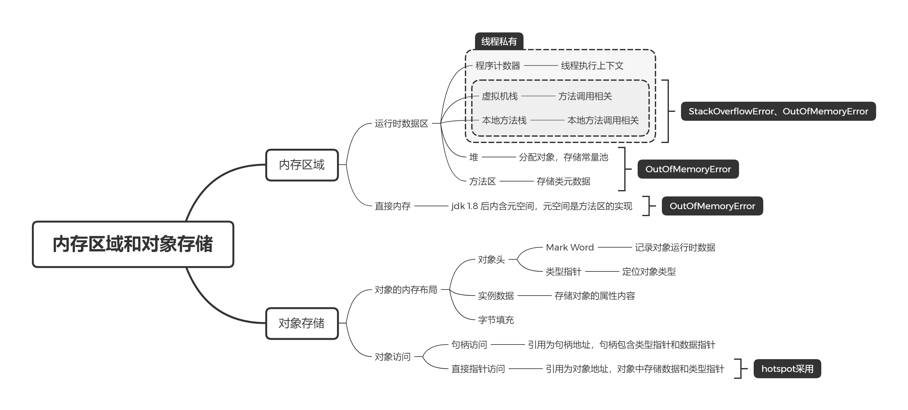

JVM系列(1) Java内存区域
1. JVM简介
Java Virutal Machine，JVM，Java 虚拟机，是用于执行字节码的虚拟计算机。
JVM 是 Java 平台的基石，是实现硬件无关和平台无关的关键部分，是字节码的运行平台。它与 Java 语言没有必然联系，只与特定的 class 文件格式所关联，并且遵守自己的虚拟机规范。
目前最主流的虚拟机是 Oracle 的 hotspot。
2. Java内存区域
2.1 运行时数据区
JVM 规范定义了若干程序运行期间会使用到的运行数据区，如下图所示。

运行时数据区：
- 程序计数器：线程私有，记录线程执行上下文。程序的分支、异常处理、线程切换等工作依赖这个计数器完成；
- Java 虚拟机栈：线程私有，生命周期和线程相同。每个方法执行时，都会栈中创建一个栈帧，用于存储局部变量、方法调用等，方法调用结束则回收栈帧。如果栈深度溢出抛出 StackOverflowError，无法申请到足够内存则抛出 OutOfMemoryError；
- 本地方法栈：线程私有，与虚拟机栈类似，但用于本地方法调用，同样也会抛出 StackOverflowError 和 OutOfMemoryError；
- 堆：线程共享，对象分配内存的区域，溢出抛出 OutOfMemoryError；
- 方法区：线程共享，存储类元信息、常量、静态变量等，溢出抛出 OutOfMemoryError。
除了运行时数据区外，JVM 还管理直接内存。直接内存不属于运行时数据区，它是 jvm 所属进程的内存，即操作系统给该进程分配的堆空间，溢出抛出 OutOfMemoryError。
2.2 永久代和元空间
方法区是虚拟机规范中所定义的内存区域，在具体的虚拟机上实现可能不同。
永久代是早期 hotspot 对方法区的实现，包含类元数据、字符串常量池、静态变量等，在 jdk 1.7 后字符串常量池和静态变量被移动到堆中。
永久代可以将垃圾收集自然拓展到方法区，减少了 hotspot 团队的工作量，但是存在以下问题：
- 永久代的内存较少回收，并且和老年代关联垃圾回收，容易触发 Full GC;
- 永久代的概念只属于 hotspot，对合并 hotspot 和其他虚拟机造成阻碍。
对于永久代的问题，在 jdk 1.8 后，hotspot 团队放弃了永久代，而是采用元空间来代替永久代，元空间存放在直接内存中，更不易出现 OutOfMemoryError。
3. 对象存储
3.1 对象访问
对于堆中的对象，虚拟机主要有两种访问方式：
句柄访问：堆中划分出句柄池，引用存储对象的句柄，句柄包含对象实例数据指针和类型数据指针。优点是对象移动时只需要改变句柄的实例数据指针。

直接指针访问：引用直接存储对象地址，在堆中的对象实例中存储了实例数据和指向类型的指针，优点是少一次指针定位。
hotspot 采用直接指针访问的方式。
3.2 内存分布
在 hotspot 虚拟机中，对象在堆内存中的内存分布可以划分为 3 个部分：
对象头，主要包含：
Mark Word：记录对象自身的运行时数据，64 位虚拟机的 Mark Word 内容如下图所示。

类型指针：指向类元数据的指针，JVM 通过指针定位方法区中的 klass 对象。
实例数据：存储对象的属性内容，即各种类型字段的值；
对齐填充：hotspot 虚拟机要求对象大小是 8 字节的整数倍。
hotspot 基于 oop-klass 模型来描述一个对象，oop 指普通对象指针 ordinary object pointer，指向类实例数据的内存地址；klass 是方法区中类元信息的运行时数据结构，记录了类的继承信息、成员方法、构造函数等，日常开发使用的 Class 对象可以理解为指向方法区 klass 对象的指针。
对 oop-klass 的具体分析可见《揭秘Java虚拟机》第 5 章。
以下代码的 oop-klass 模型如图所示。
1 | class Model |

此图存在一定问题，在 jdk 1.7 之后，静态变量被移动到堆中，故图中的 a 变量应该位于堆而不是方法区。
4. 总结
上文主要介绍了虚拟机的内存是如何划分的，以及相应区域溢出时会产生的异常。除此之外，还介绍了对象在堆中的内存分布和访问手段。本文的思维导图如下：
